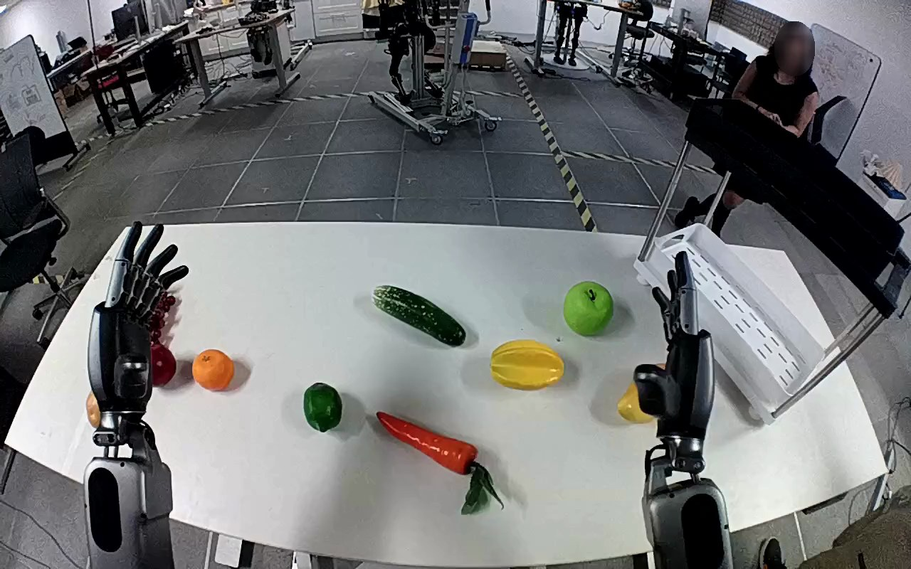

NVIDIA GR1 · 35
Video 35

Visual review action_review.json
{
"prompt_protocol": "humanoid_action_v1",
"prompt_provenance": "visually_authored_from_video_and_initial_frame",
"reviewed_contact_sheets": [
"sheet_001.jpg"
],
"inspected_frame_stride": 2,
"inspected_sampled_frame_count": 60,
"initial_scene": "The camera looks forward over two forearms extending from the near edge of a white table. A yellow-orange mango lies on the right beside a white slotted shelf tray; a distinct ridged yellow fruit lies nearer the table center. The left hand is open and does not manipulate an object.",
"observed_sequence": [
{
"start_frame": 0,
"end_frame": 28,
"action": "Right hand reaches toward the yellow-orange mango, rotates its palm and fingers around it, and nudges/reorients the fruit while it remains supported on the tabletop. Left hand stays open on the other side.",
"confidence": "high"
},
{
"start_frame": 29,
"end_frame": 50,
"action": "Right hand briefly opens/repositions beside the mango; mango remains on the table with its long axis now more horizontal.",
"confidence": "high"
},
{
"start_frame": 51,
"end_frame": 64,
"action": "Right thumb and fingers close around opposite sides of the mango, securing it and lifting it from the tabletop.",
"confidence": "high"
},
{
"start_frame": 65,
"end_frame": 100,
"action": "Right arm lifts and transports the mango toward the white shelf tray, holding it upright as it approaches the near end of the tray. Left hand remains uninvolved; no hand-to-hand transfer occurs.",
"confidence": "high"
},
{
"start_frame": 101,
"end_frame": 113,
"action": "Right hand positions the held mango over the near/right portion of the shelf tray and lowers it toward the slotted surface.",
"confidence": "high"
},
{
"start_frame": 114,
"end_frame": 119,
"action": "Right fingers open; mango moves down onto the slotted tray. Mango stays visible at the tray with right hand immediately beside and partly over it; the arm has not withdrawn.",
"confidence": "high"
}
],
"arm_hand_roles": {
"right": "Sole manipulator: approaches and nudges/repositions mango, grasps it with thumb and fingers, lifts/transports it to the shelf tray, lowers it and opens fingers at placement.",
"left": "Open and nonparticipating throughout; minor pose movement without fruit contact, support or transfer."
},
"coordination": "Single-hand manipulation; no support by the left hand and no interaction with the background person.",
"anatomical_side_evidence": {
"description": "Both forearms extend forward from the camera-side lower edge, with palms directed toward the table. The active arm is on the robot-forward right, with its thumb facing inward toward the other hand; the other hand has the complementary inward thumb arrangement. This forward-over-arms camera geometry and hand morphology support anatomical right for the active arm, consistent with the source instruction.",
"confidence": "high",
"limitation": "Torso and shoulder attachments are outside the image; anatomy is established from forward forearm orientation and complementary thumb morphology, not image position alone."
},
"evidence_frame_indices": [
0,
20,
42,
56,
64,
78,
96,
112,
116,
118,
119
],
"initial_png_inspected_at_native_resolution": true,
"terminal_state": "The yellow-orange mango is on the near portion of the white slotted shelf tray after the right fingers open. The right hand remains beside/partly above the mango. No subsequent withdrawal is visible; left hand remains open and uninvolved.",
"selected_execution_status": "success",
"uncertainties": [
"The right hand partly obscures the exact mango-to-tray contact patch at release; the mango is visibly lowered onto the tray and remains there in final frames, but subsequent settling or hand withdrawal is outside the recorded sequence."
],
"annotation_discrepancies": [],
"video_id": "35",
"dataset": "NVIDIA_GR1_100",
"dedicated_review_agent": "review_gr1_35",
"review_source_video": "NVIDIA_GR1_100/35/original/original.mp4",
"source_frame_count": 120,
"source_fps": 20.0,
"native_detail_frames": [
0,
20,
42,
56,
64,
78,
96,
112,
116,
118,
119
],
"world_model_prompt": "The robot uses its right hand to grasp the yellow-orange mango on the right side of the table, lift it, and carry it toward the white shelf. It lowers the mango onto the shelf tray and opens its fingers, leaving the mango on the tray with its hand still beside it. Keep the camera fixed; preserve robot geometry, physically valid joint motion, and normal gripper opening and closing.",
"original_task_instruction": "Use the right hand to pick up yellow mango from right side of table to white shelf.",
"selected_segment": {
"start_frame": 0,
"end_frame_exclusive": 120,
"reason": "Complete original single-task reference; no cropping or trimming requested."
},
"source_video_sha256": "1388c0e2f27dd2e956580b4a16523c6f68079e283f18fe5634947775e916ebf9",
"review_completed_at": "2026-10-13T18:02:10.952229+00:00"
}